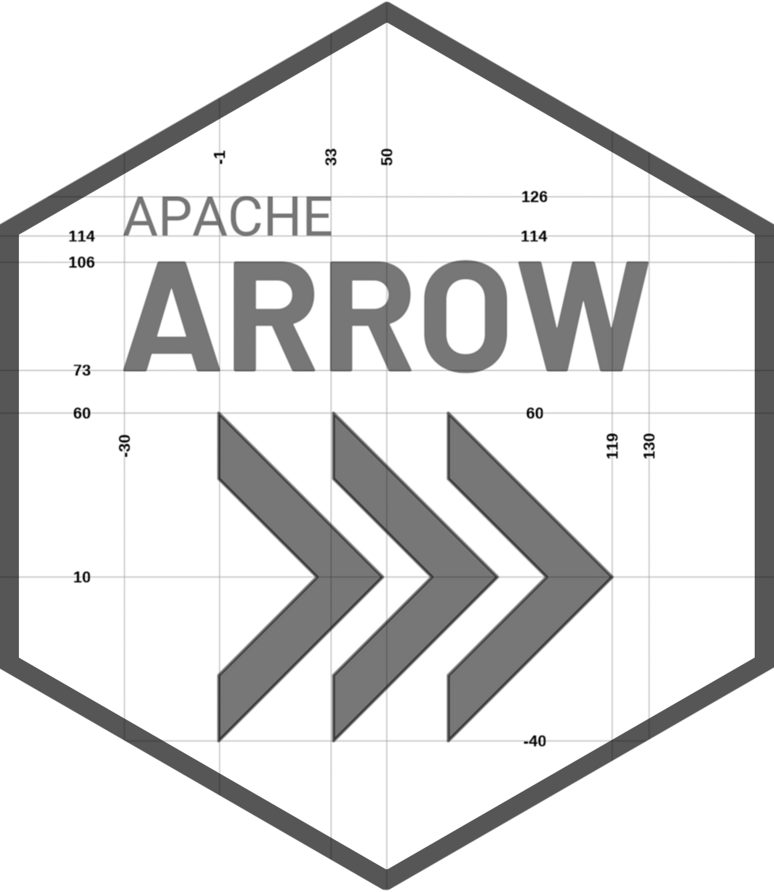
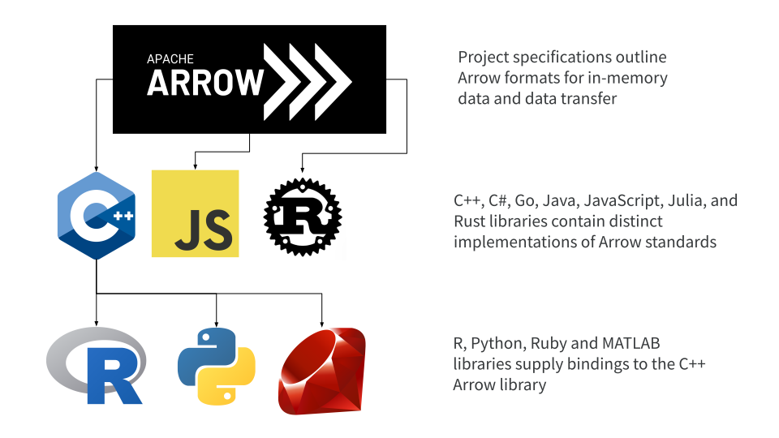
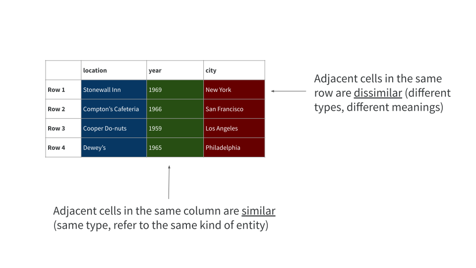

Part 1: Hello Arrow
Hello, and welcome to the Apache Arrow workshop! We hope you find it valuable.
If you’ve arrived on this page then presumably you’re an R user with some familiarity with tidyverse (especially dplyr) workflows, and would like to learn more about how to work with big data sets using the arrow package for R. Our goal in this workshop is to help you get there!
In this tutorial you will learn how to use the arrow R package to create seamless engineering-to-analysis data pipelines. You’ll learn how to use the parquet file format for efficient storage and data access. You’ll learn how to exercise fine control over data types to avoid common data pipeline problems. During the tutorial you’ll be processing larger-than-memory files and multi-file datasets with familiar dplyr syntax, and working with data in cloud storage. You’ll learn how the Apache Arrow project is structured and what you can do with Arrow to handle very large data sets. With any luck, you’ll have some fun too!
Hopefully, you’ve installed the packages you’ll need and have a copy of the downloaded onto your local machine. If not, it’s probably a good idea to check out the packages and data page before continuing :)
Let’s get started!
If you’re going to go through this workshop, we ought to be able to give you a decent motivation for doing so, right? There’s no point in you learning about the arrow package if we can’t explain why it’s a good thing to know! But as all good writers know, sometimes it’s more powerful to show rather than tell, so let’s just start using arrow now and hold the explanations to the end.
Let’s start by loading arrow and dplyr
library(arrow)
library(dplyr)Actually, you can assume that every page on this site starts with those two packages and all the other dependencies loaded, even if this code chunk isn’t shown explicitly:
library(arrow)
library(dplyr)
library(dbplyr)
library(duckdb)
library(stringr)
library(lubridate)
library(palmerpenguins)
library(tictoc)
library(scales)
library(janitor)
library(fs)
library(ggplot2)
library(ggrepel)
library(sf)When you do this yourself you’ll see some additional messages that I’ve hidden from the output. Now that we have the packages loaded, we have access to the dplyr functions for data manipulation and (importantly!) the arrow back end that allows you to use dplyr syntax to manipulate data sets that are stored in Arrow.
Let’s see this in action. I’ll use the open_dataset() function to connect to the NYC taxi data. On my machine this data is stored in the ~/Datasets/nyc-taxi folder, so my code looks like this:
nyc_taxi <- open_dataset("~/Datasets/nyc-taxi")Yours will look slightly different depending on where you saved your local copy of the data. Now, if you remember from when you downloaded the data this is 69GB of information, yet open_dataset() returns a result almost immediately. What’s happened here is that arrow has scanned the contents of that folder, found the relevant files, and created an nyc_taxi object that stores some metadata about those files. Here’s what that looks like:
nyc_taxiFileSystemDataset with 158 Parquet files
vendor_name: string
pickup_datetime: timestamp[ms]
dropoff_datetime: timestamp[ms]
passenger_count: int64
trip_distance: double
pickup_longitude: double
pickup_latitude: double
rate_code: string
store_and_fwd: string
dropoff_longitude: double
dropoff_latitude: double
payment_type: string
fare_amount: double
extra: double
mta_tax: double
tip_amount: double
tolls_amount: double
total_amount: double
improvement_surcharge: double
congestion_surcharge: double
pickup_location_id: int64
dropoff_location_id: int64
year: int32
month: int32For an R user used to working with data frames and tibbles, this output is likely to be unfamiliar. Each variable is listed as a row in the output, and next to the name of each variable you can see the type of data stored in it. It does represent a tabular data set just like a data frame, but it’s a different kind of thing. It has to be: behind the scenes there are 1.7 billion rows of data in one huge table, and this is just too big to load into memory. However, we can still work with it anyway. Here’s a simple example: I’ll extract the first six rows using the head() function and then collect() those rows from Arrow and return them to R:
nyc_taxi |>
head() |>
collect()# A tibble: 6 × 24
vendor_name pickup_datetime dropoff_datetime passenger_count
<chr> <dttm> <dttm> <int>
1 VTS 2009-01-04 13:52:00 2009-01-04 14:02:00 1
2 VTS 2009-01-04 14:31:00 2009-01-04 14:38:00 3
3 VTS 2009-01-04 02:43:00 2009-01-04 02:57:00 5
4 DDS 2009-01-02 07:52:58 2009-01-02 08:14:00 1
5 DDS 2009-01-25 03:18:23 2009-01-25 03:24:56 1
6 DDS 2009-01-17 09:35:59 2009-01-17 09:43:35 2
# … with 20 more variables: trip_distance <dbl>, pickup_longitude <dbl>,
# pickup_latitude <dbl>, rate_code <chr>, store_and_fwd <chr>,
# dropoff_longitude <dbl>, dropoff_latitude <dbl>, payment_type <chr>,
# fare_amount <dbl>, extra <dbl>, mta_tax <dbl>, tip_amount <dbl>,
# tolls_amount <dbl>, total_amount <dbl>, improvement_surcharge <dbl>,
# congestion_surcharge <dbl>, pickup_location_id <int>,
# dropoff_location_id <int>, year <int>, month <int>The output here is a perfectly ordinary tibble object that now exists in R just like any other object, and – in case you haven’t already looked at it – we have posted a data dictionary explaining what each of these columns represents. Of course, this version of the table only has a handful of rows, but if you imagine this table stretching out for a lot more you have a good sense of what the actual nyc_taxi data looks like. How many rows?
nrow(nyc_taxi)[1] 1672590319Yes, this really is a table with 1.7 billion rows. Yikes.
Okay so let’s do something with it. Suppose I wanted to look at the five-year trends for the number of taxi rides in NYC, both in total and specifically for shared trips that have multiple passengers. I can do this using dplyr commands like this:
- use
filter()to limit the data to the period from 2017 to 2021 - use
group_by()to setyearas the grouping variable - use
summarize()to count the number ofall_tripsandshared_trips - use
mutate()to compute apct_sharedcolumn with the percent of trips shared - use
collect()to trigger execution of the query and return results to R
Here’s what that looks like:
nyc_taxi |>
filter(year %in% 2017:2021) |>
group_by(year) |>
summarize(
all_trips = n(),
shared_trips = sum(passenger_count > 1, na.rm = TRUE)
) |>
mutate(pct_shared = shared_trips / all_trips * 100) |>
collect()# A tibble: 5 × 4
year all_trips shared_trips pct_shared
<int> <int> <int> <dbl>
1 2017 113495512 32296166 28.5
2 2018 102797401 28796633 28.0
3 2019 84393604 23515989 27.9
4 2020 24647055 5837960 23.7
5 2021 30902618 7221844 23.4Try typing this out yourself and then have a go at the exercises!
Exercises
- Calculate the total number of rides for every month in 2019
- For each month in 2019, find the distance travelled by the longest recorded taxi ride that month and sort the results in month order
nyc_taxi |>
filter(year == 2019) |>
count(month) |>
collect()# A tibble: 12 × 2
month n
<int> <int>
1 11 6877463
2 10 7213588
3 12 6895933
4 1 7667255
5 4 7432826
6 3 7832035
7 5 7564884
8 2 7018750
9 6 6940489
10 7 6310134
11 8 6072851
12 9 6567396nyc_taxi |>
filter(year == 2019) |>
group_by(month) |>
summarize(longest_trip = max(trip_distance, na.rm = TRUE)) |>
arrange(month) |>
collect()# A tibble: 12 × 2
month longest_trip
<int> <dbl>
1 1 832.
2 2 702.
3 3 237.
4 4 831.
5 5 401.
6 6 45977.
7 7 312.
8 8 602.
9 9 604.
10 10 308.
11 11 701.
12 12 19130.And there you have it! Your first data analysis using arrow is done. Yay!
What is Arrow and why should you care?
Okay, let’s take a moment to unpack this. We just analyzed 1.7 billion rows of data in R, a language that has not traditionally been thought to be ideal for big data! How did we do that? Clearly the arrow package is doing some magic, but what is that magic and how does it work?
To demystify what just happened here we need talk about what the Apache Arrow project is all about and why it’s exciting. So let’s start at the beginning. There’s a one sentence description of Arrow that I really like, and has an almost haiku-like quality to it
A multi-language toolbox
for accelerated data interchange
and in-memory processing
This description immediately tells you three important things:
- Arrow is a single project that has implementations or bindings in many different programming languages: whether you use R, Python, C++, Ruby, Rust, Julia, JavaScript, or a variety of other languages, you can use Arrow.
- Arrow makes it easier and faster (sometimes shockingly faster!) to share data among different applications and programming languages
- Arrow formats exist to structure data efficiently in-memory (as opposed to on-disk), and provides compute engines to allow you process those data
Let’s unpack these three things.
Arrow as a multi-language toolbox
At an abstract level, Arrow provides a collection of specifications for how tabular data should be stored in-memory, and how that data should be communicated when transferred from one process to another. That’s the top level in the diagram below:

There are several independent implementations of the Arrow standards, shown in the middle layer in the diagram. At present there are libraries in C++, C#, Go, Java, JavaScript, Julia and Rust, so anyone who uses one of those languages can store, manipulate, and communicate Arrow-formatted data sets. Because these are independent libraries, they are routinely tested against one another to ensure they produce the same behaviour!
For other programming languages there isn’t a native Arrow implementation, and instead the libraries supply bindings to the Arrow C++ library. That’s what happens for R, Python, Ruby, and MATLAB, and is shown in the bottom layer of the diagram above. If you’re using one of these languages, you can still work with Arrow data using these bindings. In R, for example, those bindings are supplied by the arrow package: it allows R users to write native R code that is translated to instructions that get executed by the Arrow C++ library.
The Arrow documentation
Because Arrow is a multi-language project, the documentation ends up spread across several places. R users new to the project will be most interested in the Apache Arrow R cookbook and the arrow package website. When you’re ready to look at the detail, it’s helpful to read a little on the Arrow specification. If you’re interested in contributing to the project the new contributor’s guide has information relevant for R and other languages.
Arrow for accelerated data interchange
One huge benefit to Arrow as a coherent multi-language toolbox is that it creates the possibility of using Arrow as a kind of “lingua franca” for data analysis, and that has huge benefits for allowing efficient communication. Here’s what we mean. The diagram below shows a situation where we have three applications, one written in R, another in Python, and a third one in C++.

Suppose we have a data frame in-memory in the R application, and we want to communicate that with the Python application. Python doesn’t natively use the same in-memory data structures as R: the Python app might be expecting to use pandas instead. So the data has to be converted from one in-memory format (data frame) to another (panda). If the data set is large, this conversion cost could be quite computationally expensive.
But it’s worse than that too: the R and Python apps need some way to communicate. They don’t actually share the same memory, and they probably aren’t running on the same machine. So the apps would also need to agree on a communication standard: the data frame (in R memory) needs to be encoded – or “serialized”, to use the precise term – to a byte stream and transmitted as a message that can be decoded – or “deserialzed” – by Python at the other end and then reorganised into a panda data structure.
All of that is extremely inefficient. When you add costs associated with serializing data to and from on-disk file storage (e.g., as a CSV file or a parquet file) you start to realise that all these “copy and convert” operations are using up a lot of your compute time!
Now think about what happens if all three applications rely on an Arrow library. Once loaded, the data itself stays in memory allocated to Arrow, and the only thing that the applications have to do is pass pointers around! This is shown below:

Better yet, if you ever need to transfer this data from one machine to another (e.g., if the applications are running on different machines and need local copies of the data), the Arrow specification tells you exactly what format to use to send the data, and – importantly – that format is designed so the “thing” you send over the communication channel has the exact same structure as the “thing” that has to be represented in memory. In other words, you don’t have to reorganised the message from the serialized format to something you can analyze: it’s already structured the right way!
But wait, it gets even better! (Ugh, yes, we know this does sound like one of those tacky infomercials that promise you free steak knives if you call in the next five minutes, but it actually does get better…) Because there are all these Arrow libraries that exist in different languages, you don’t have to do much of the coding yourself. The “connecters” that link one system to another are already written for you.
Neat, yes?
Arrow for efficient in-memory processing
So far we’ve talked about the value of Arrow in terms of its multi-lingual nature and ability to serve as an agreed-upon standard for data representation and transfer. These are huge benefits in themselves, but that’s a generic argument about the importance of standardization and providing libraries for as many languages as you can. It doesn’t necessarily mean that the Arrow specifications ought to be the ones we agree to. So is there a reason why we should adopt this specific tool as the standard? Well yes, there is: Arrow is designed for efficient data operations.
Here’s what we mean. Let’s take this small table as our working example, containing four rows and three columns:

Although the data are rectangular in shape, a tabular data set has a fundamental asymmetry: rows refer to cases, and columns refer to variables. This almost always has the consequence that data stored in the same column are fundamentally similar. The years 1969 and 1959 are both integer valued (same type) and have related semantics (refer to a year-long period of time). What that means is that any operation you might want to do to 1969 (e.g., check if it was a leap year), you are probably likely to want to do the same operation with 1959. From a data analysis point of view, these are very likely to be processed using the same instructions.
The same doesn’t apply when it comes to rows. Although the year 1969 and the city "New York" are both properties associated with the Stonewall Inn riots, they have fundamentally different structure (one is represented as an integer, and the other as a string), and they have different semantics. You might want to check if 1969 was a leap year, but it makes no sense whatsoever to ask if New York city is a leap year, does it? In other words, from a data analysis perspective, we necessarily use different instructions to work with these two things.
Okay, so now think about what happens when we want to store this table in memory. Memory addresses aren’t organised into two dimensional tables, they’re arranged as a sequential address space. That means we have to flatten this table into a one-dimensional structure. We can either do this row-wise, or we can do it column-wise. Here’s what that looks like:

On the left you can see what happens when cells are arranged row-wise. Adjacent cells aren’t very similar to each other. On the right, you can see what happens when cells are arranged column-wise (often referred to as a columnar format): adjacent items in memory tend to have the same type, and correspond to the same ontological category (e.g., cities are next to other cities, intra-city locations are next to other such locations).
Yes, but why does this matter? It matters because modern processors have a feature that let you take this advantage of this kind of memory locality, known as “single instruction, multiple data” (SIMD). Using SIMD programming, it’s possible to send a single low level instruction to the CPU, and have the CPU execute it across an entire block of memory without needing to send separate instructions for each memory address. In some ways it’s similar to the ideas behind parallel computing by multithreading, but it applies at a much lower level!
So as long as your data are organised in a columnar format (which Arrow data are) and your compute engine understands how to take advantage of modern CPU features like SIMD (which the Arrow compute engine does), you can speed up your data analysis by a substantial amount!

What can the arrow package do for R users?
Broadly speaking we can divide the core functionality of the arrow package into two types of operation: Reading and writing data, and manipulating data
Read/write capabilities
The diagram below shows (most of) the read/write capabilities of arrow in a schematic fashion:

There’s several things to comment on here.
First, let’s look at the “destinations” column on the right hand side. You can read and write files (top right row) to your local storage, or you can send them to an S3 bucket. Regardless of where you’re reading from or writing to, arrow supports CSV (and other delimited text files), parquet, and feather formats. Not shown in the diagram are JSON files: arrow can read data from JSON format but not write to it.
Second, let’s look at the “objects” column on the left hand side. This column shows the three main data objects you’re likely to work with using arrow: data frames (and tibbles), Arrow Tables, and Arrow Datasets. Data frames are regular R objects stored in R memory, and Tables are the analogous data structure stored in Arrow memory. In contrast, Arrow Datasets are more complicated objects used when the data are too large to fit in memory, and typically stored on disk as multiple files. You can read and write any of these objects to and from disk using arrow. (Note that there are other data structures used by arrow that aren’t shown here!)
Third, let’s look at the “stream” row on the bottom right. Instead of writing data to file, the arrow package allows you to stream it to a remote process. You can do this with in-memory data objects like Tables and data frames, but not for Datasets. Although not shown on the diagram, you can also do this for Arrow Record Batches.
Finally, there is one big omission from this table: Arrow Flight servers. The arrow package contains functionality supporting Arrow Flight, but that’s not covered in this workshop!
Data manipulation
The data manipulation abilities of the arrow package come in a few different forms. For instance, one thing that arrow does is provide a low-level interface to the Arrow C++ library: you can call the compute functions in the C++ library directly from R if you want. However, for most R users this isn’t what you really want to do, because the Arrow C++ library has its own syntax and doesn’t feel very “R-like”.
To address this, arrow also supplies a dplyr backend, allowing R users to write normal dplyr code for data wrangling, and translating it into a form that the Arrow C++ library can execute. In that sense it’s very similar to the dbplyr package that does the same thing for SQL database queries:

It’s this dplyr back end that we relied on in the demonstration at the start of the session.